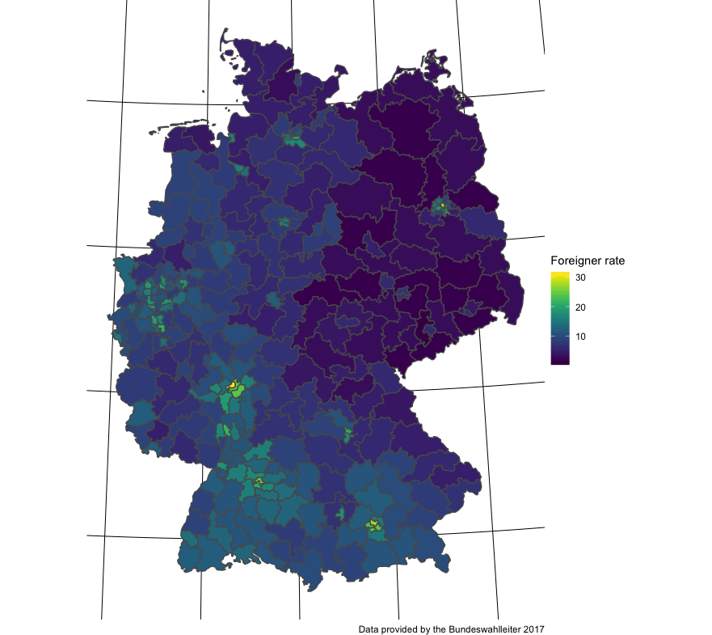
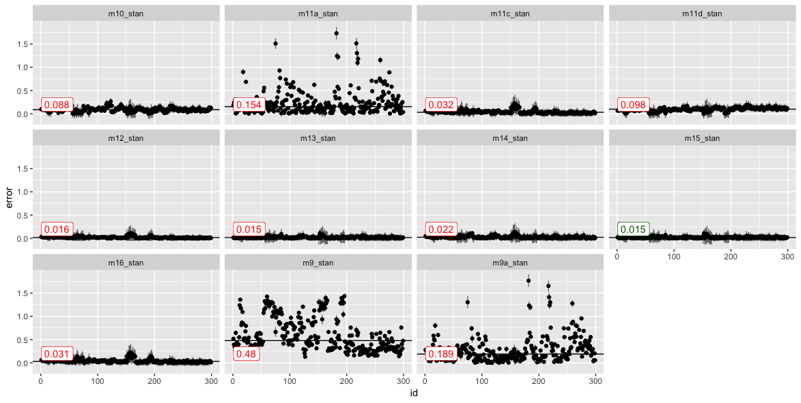

AfD votes, and socioenomic factors at the Bundestagswahl 2017
class: top, left # AfD votes

| tle: “Predictors of AfD party success in the 2017 elections” |
| btitle: “A Bayesian modeling approach” |
| thor: | |
| Sebastian Sauer, |
| Sandra Sülzenbrück, |
| Yvonne Ferreira, |
| Rüdiger Buchkremer |
| te: “FOM DGPs 2018” |
| s: [“default-fonts”, “default”] |
| tput: |
| xaringan::moon_reader: |
| lib_dir: libs |
| nature: |
| highlightStyle: github |
| highlightLines: true |
| countIncrementalSlides: false |
| itor_options: |
| chunk_output_type: console |
class: center, middle, inverse
Right-wing populism then and now
class: top, left # Causes of 20th century world wars
nationalism
authoritarianism
racism
territorial disputes
class conflicts
crisis of capitalism
.small[.footnote[Source: Kershaw, I. (2016). To hell and back: Europe 1914-1949. New York City, NW: Penguin.]]
???
Image credit:Wikipedia, RIA Novosti archive, image #44732 / Zelma / CC-BY-SA 3.0
class: top, left
shows anti-establishment attitude
the people is thought of as a homogeneous body
elites are portrayed as corrupt, the people as morally pure
favors anti-pluralism
provides low complexity solutions to societal questions
narrative of “forgotton man Joe Plumber”
sees threat in cultural outsiders
.footnote[Source: Decker, F. (2003). Der neue Rechtspopulismus. Wiesbaden: VS Verlag für Sozialwissenschaften. Nicole Berbuir, Marcel Lewandowsky & Jasmin Siri (2015) The AfD and its Sympathisers: Finally a Right-Wing Populist Movement in Germany?, German Politics, 24:2, 154-178, DOI: 10.1080/09644008.2014.982546]
The AfD …
engages in close contacts to far-right
recruits (ex-)nazis
Indirect support of violence towards minorities:
“Wenn der Staat die Bürger nicht mehr schützen kann, gehen die Menschen auf die Straße und schützen sich selber.”
.small[— Tweet by Markus Frohnmaier (@Frohnmaier_AfD) on August, 26th 2018 in reaction to Chemnitz riots]
.footnote[Source: Fuchs, C., & Middelhoff, P. (2018, May 12). Neue Rechte - Bis in den letzten, rechten Winkel. Retrieved from https://www.zeit.de/politik/deutschland/2018-05/neue-rechte-verteilung-deutschlandkarte]
class: top, left # Popular theories on AfD success
Populist party support is fueled by …
weak economy (“rust belt hypothesis”)
high immigration (“flooding hypothesis”)
cultural patterns (“Saxonia hypothesis”)
.footnote[Source: Franz, Christian; Fratzscher, Marcel; Kritikos, Alexander S. (2018) : German right-wing party AfD finds more support in rural areas with aging populations, DIW Weekly Report, ISSN 2568-7697, Deutsches Institut für Wirtschaftsforschung (DIW), Berlin, Vol. 8, Iss. 7/8, pp. 69-79]
.center[
]#> [1] "<?xml version=\"1.0\" encoding=\"UTF-8\" standalone=\"no\"?>\n<!DOCTYPE svg PUBLIC \"-//W3C//DTD SVG 1.1//EN\"\n \"http://www.w3.org/Graphics/SVG/1.1/DTD/svg11.dtd\">\n<!-- Generated by graphviz version 2.40.1 (20161225.0304)\n -->\n<!-- Title: research_mdoel Pages: 1 -->\n<svg width=\"728pt\" height=\"692pt\"\n viewBox=\"0.00 0.00 728.00 692.00\" xmlns=\"http://www.w3.org/2000/svg\" xmlns:xlink=\"http://www.w3.org/1999/xlink\">\n<g id=\"graph0\" class=\"graph\" transform=\"scale(1 1) rotate(0) translate(4 688)\">\n<title>research_mdoel</title>\n<polygon fill=\"#ffffff\" stroke=\"transparent\" points=\"-4,4 -4,-688 724,-688 724,4 -4,4\"/>\n<!-- unemployment -->\n<g id=\"node1\" class=\"node\">\n<title>unemployment</title>\n<polygon fill=\"none\" stroke=\"#2f4f4f\" points=\"468,-216 252,-216 252,-180 468,-180 468,-216\"/>\n<text text-anchor=\"middle\" x=\"360\" y=\"-193.8\" font-family=\"Helvetica,sans-Serif\" font-size=\"14.00\" fill=\"#2f4f4f\">unemployment</text>\n</g>\n<!-- AfD -->\n<g id=\"node4\" class=\"node\">\n<title>AfD</title>\n<polygon fill=\"none\" stroke=\"#2f4f4f\" points=\"720,-360 504,-360 504,-324 720,-324 720,-360\"/>\n<text text-anchor=\"middle\" x=\"612\" y=\"-337.8\" font-family=\"Helvetica,sans-Serif\" font-size=\"14.00\" fill=\"#2f4f4f\">AfD</text>\n</g>\n<!-- unemployment->AfD -->\n<g id=\"edge2\" class=\"edge\">\n<title>unemployment->AfD</title>\n<path fill=\"none\" stroke=\"#000000\" d=\"M391.6608,-216.0919C437.208,-242.1188 521.2381,-290.1361 571.3293,-318.7596\"/>\n<polygon fill=\"#000000\" stroke=\"#000000\" points=\"569.8515,-321.9463 580.2705,-323.8689 573.3246,-315.8686 569.8515,-321.9463\"/>\n</g>\n<!-- foreigners -->\n<g id=\"node2\" class=\"node\">\n<title>foreigners</title>\n<polygon fill=\"none\" stroke=\"#2f4f4f\" points=\"468,-504 252,-504 252,-468 468,-468 468,-504\"/>\n<text text-anchor=\"middle\" x=\"360\" y=\"-481.8\" font-family=\"Helvetica,sans-Serif\" font-size=\"14.00\" fill=\"#2f4f4f\">foreigners</text>\n</g>\n<!-- foreigners->AfD -->\n<g id=\"edge4\" class=\"edge\">\n<title>foreigners->AfD</title>\n<path fill=\"none\" stroke=\"#000000\" d=\"M391.6608,-467.9081C437.208,-441.8812 521.2381,-393.8639 571.3293,-365.2404\"/>\n<polygon fill=\"#000000\" stroke=\"#000000\" points=\"573.3246,-368.1314 580.2705,-360.1311 569.8515,-362.0537 573.3246,-368.1314\"/>\n</g>\n<!-- east_west -->\n<g id=\"node3\" class=\"node\">\n<title>east_west</title>\n<polygon fill=\"none\" stroke=\"#2f4f4f\" points=\"468,-360 252,-360 252,-324 468,-324 468,-360\"/>\n<text text-anchor=\"middle\" x=\"360\" y=\"-337.8\" font-family=\"Helvetica,sans-Serif\" font-size=\"14.00\" fill=\"#2f4f4f\">east_west</text>\n</g>\n<!-- east_west->AfD -->\n<g id=\"edge6\" class=\"edge\">\n<title>east_west->AfD</title>\n<path fill=\"none\" stroke=\"#000000\" d=\"M468.3332,-342C476.679,-342 485.1303,-342 493.5367,-342\"/>\n<polygon fill=\"#000000\" stroke=\"#000000\" points=\"493.7583,-345.5001 503.7583,-342 493.7583,-338.5001 493.7583,-345.5001\"/>\n</g>\n<!-- economy -->\n<g id=\"node5\" class=\"node\">\n<title>economy</title>\n<ellipse fill=\"none\" stroke=\"#2f4f4f\" cx=\"108\" cy=\"-108\" rx=\"108\" ry=\"108\"/>\n<text text-anchor=\"middle\" x=\"108\" y=\"-103.8\" font-family=\"Helvetica,sans-Serif\" font-size=\"14.00\" fill=\"#2f4f4f\">economy</text>\n</g>\n<!-- economy->unemployment -->\n<g id=\"edge1\" class=\"edge\">\n<title>economy->unemployment</title>\n<path fill=\"none\" stroke=\"#000000\" d=\"M209.7717,-144.347C240.3082,-155.2529 272.8178,-166.8635 299.7561,-176.4843\"/>\n<polygon fill=\"#000000\" stroke=\"#000000\" points=\"298.8202,-179.8665 309.4148,-179.9339 301.1746,-173.2743 298.8202,-179.8665\"/>\n</g>\n<!-- immigration -->\n<g id=\"node6\" class=\"node\">\n<title>immigration</title>\n<ellipse fill=\"none\" stroke=\"#2f4f4f\" cx=\"108\" cy=\"-576\" rx=\"108\" ry=\"108\"/>\n<text text-anchor=\"middle\" x=\"108\" y=\"-571.8\" font-family=\"Helvetica,sans-Serif\" font-size=\"14.00\" fill=\"#2f4f4f\">immigration</text>\n</g>\n<!-- immigration->foreigners -->\n<g id=\"edge3\" class=\"edge\">\n<title>immigration->foreigners</title>\n<path fill=\"none\" stroke=\"#000000\" d=\"M209.7717,-539.653C240.3082,-528.7471 272.8178,-517.1365 299.7561,-507.5157\"/>\n<polygon fill=\"#000000\" stroke=\"#000000\" points=\"301.1746,-510.7257 309.4148,-504.0661 298.8202,-504.1335 301.1746,-510.7257\"/>\n</g>\n<!-- culture -->\n<g id=\"node7\" class=\"node\">\n<title>culture</title>\n<ellipse fill=\"none\" stroke=\"#2f4f4f\" cx=\"108\" cy=\"-342\" rx=\"108\" ry=\"108\"/>\n<text text-anchor=\"middle\" x=\"108\" y=\"-337.8\" font-family=\"Helvetica,sans-Serif\" font-size=\"14.00\" fill=\"#2f4f4f\">culture</text>\n</g>\n<!-- culture->east_west -->\n<g id=\"edge5\" class=\"edge\">\n<title>culture->east_west</title>\n<path fill=\"none\" stroke=\"#000000\" d=\"M216.3332,-342C224.679,-342 233.1303,-342 241.5367,-342\"/>\n<polygon fill=\"#000000\" stroke=\"#000000\" points=\"241.7583,-345.5001 251.7583,-342 241.7583,-338.5001 241.7583,-345.5001\"/>\n</g>\n</g>\n</svg>\n"class: middle, center, inverse
class: top, left # AfD votes


class: middle, center, inverse
class: top, left
Data were…
obtained from Bundeswahlleiter 2017
had no missings
were z-transformed
Details here
Stan via the R packages rstan and rethinking
Hamiltonian Markov Chain Monte Carlo (MCMC)
2000 iterations, 2 chains, 1/2 burn-in
Information criteria (WAIC) used for model comparison
üôÄ some fitting issues with count models
Details here
.footnote[Guideline: McElreath, R. (2016). Statistical rethinking. New York City, NY: Apple Academic Press Inc.]
\[\begin{aligned} \text{AfD}_i &\sim \mathcal{N}(\mu_i, \sigma)\\ \mu_i &= \beta 0_{[east]} + \beta 1 \cdot \text{foreign_z} + \beta2 \cdot \text{unemp_z}\\ \beta0_{[east]} &\sim \mathcal{N}(0, 1)\\ \beta1 &\sim \mathcal{N}(0, 1)\\ \beta2 &\sim \mathcal{N}(0, 1)\\ \sigma &\sim \mathcal{N}(0, 1)\\ \end{aligned}\]

class: middle, center, inverse
| coefficient | Mean | StdDev | lower.0.89 | upper.0.89 | n_eff | Rhat |
|---|---|---|---|---|---|---|
| beta0[1] | -0.45 | 5.74 | -9.26 | 9.16 | 260.42 | 1 |
| beta0[2] | 1.43 | 5.75 | -7.35 | 11.05 | 259.13 | 1 |
| alpha | 0.07 | 5.74 | -9.54 | 8.84 | 260.09 | 1 |
| beta1 | -0.06 | 0.04 | -0.13 | 0.02 | 520.19 | 1 |
| beta2 | -0.21 | 0.05 | -0.28 | -0.13 | 556.18 | 1 |
| sigma | 0.68 | 0.03 | 0.64 | 0.72 | 623.57 | 1 |
| model | predictors | WAIC | pWAIC | dWAIC | weight | SE | dSE |
|---|---|---|---|---|---|---|---|
| m15_stan | state+for+unemp (ML) | -1356.32 | 21.73 | 0.00 | 1 | 34.91 | NA |
| m13_stan | state (ML) | -1298.50 | 19.17 | 57.82 | 0 | 33.63 | 15.03 |
| m14_stan | east+for+unemp (ML) | -1136.45 | 6.53 | 219.87 | 0 | 30.24 | 33.64 |
| m12_stan | area (ML) | -951.15 | 111.74 | 405.16 | 0 | 31.27 | 37.11 |
| m11c_stan | unemp | -894.09 | 4.02 | 462.23 | 0 | 37.03 | 39.86 |
| m16_stan | null (intercept) | -885.56 | 3.35 | 470.76 | 0 | 38.15 | 40.53 |
| m10_stan | for+unemp+east | -533.01 | 3.77 | 823.31 | 0 | 16.02 | 37.66 |
| m11d_stan | east | -509.22 | 0.59 | 847.09 | 0 | 10.88 | 36.40 |
| m9_stan | for+unemp+east[] | 625.56 | 6.92 | 1981.88 | 0 | 33.87 | 38.82 |
| m9a_stan | for+unemp | 808.28 | 4.72 | 2164.60 | 0 | 34.09 | 39.30 |
| m11a_stan | for | 813.89 | 4.14 | 2170.21 | 0 | 35.22 | 39.86 |
\[\begin{aligned} \text{AfD}_i &\sim \mathcal{N}(\mu_i, \sigma)\\ \mu_i &= \beta 0_{[state]} + \beta 1 \cdot \text{foreign_z} + \beta2 \cdot \text{unemp_z}\\ \beta0_{[state]} &\sim \mathcal{N}(0, \sigma_2)\\ \beta1 &\sim \mathcal{N}(0, 1)\\ \beta2 &\sim \mathcal{N}(0, 1)\\ \sigma &\sim \mathcal{N}(0, 1)\\ \sigma_2 &\sim \mathcal{N}(0, 1) \end{aligned}\]


.footnote[Gelman, A., & Hill, J. (2006). Data analysis using regression and multilevel/hierarchical models. Cambridge university press.]


class: middle, center, inverse
class: top, left
Region related patterns appear to play an important role
The present model is simplistic
Future elections will provide interesting opportunities for model improvements
.footnote[Nicole Berbuir, Marcel Lewandowsky & Jasmin Siri (2015) The AfD and its Sympathisers: Finally a Right-Wing Populist Movement in Germany?, German Politics, 24:2, 154-178, DOI: 10.1080/09644008.2014.982546]
Observational research is a very limited guide for causal interpretations
Fitting issues with count models warrant more investigation
Overfitting may be present (and underfitting)

class: middle, center, inverse
Sebastian Sauer #### sebastiansauer #### https://data-se.netlify.com/ #### ssauer@posteo.de #### Sebastian Sauer
http://data-se.netlify.com/slides/afd_dgps2018/afd_dgps2018.html#1
CC-BY
.footnote[Built using R, RMarkdown, Xaringan. Inspiration from and thanks to Yihui Xie and Antoine Bichat, among others]